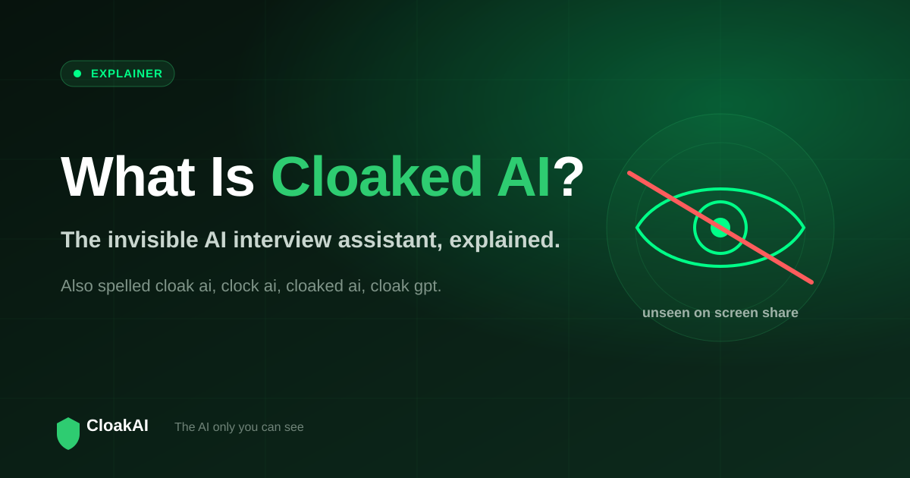
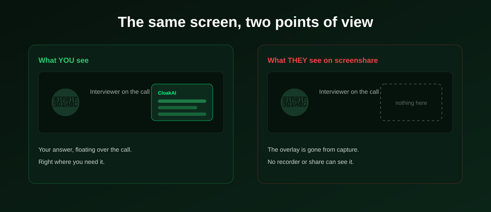

If you have searched for cloaked AI, cloak AI, or one of the many spellings people use (clock ai, clok ai, cloak gpt, cloaker), you are looking for the same idea: an AI assistant that stays hidden while it helps you. This page explains exactly what cloaked AI is, how the invisibility actually works, what it is used for, and how to try it free.
Cloaked AI is an invisible AI assistant: it shows you answers on your own screen in real time, but is hidden from screen sharing and screen recording. For interviews, CloakAI is the product that delivers this, so an interviewer sharing or recording your screen sees nothing where your answer sits.
What Does "Cloaked AI" Mean?
The word "cloaked" means hidden or concealed. A cloaked AI is therefore an AI tool designed to be present and useful to you, while remaining invisible to anyone capturing your screen. That is the whole idea. It is not about hiding that you use AI in general; it is a technical property: the assistant's window does not appear in screenshare, screen recording, or meeting screen-capture, so it does not distract or interfere with a call you are sharing.
Because it is a spoken-aloud term, people type it many different ways. If you arrived here searching cloaked ai, cloak ai, clock ai, cloak gpt, ai cloaker, or a similar variation, you are in the right place. They all point to the same concept, and to CloakAI as the interview-focused tool built around it.

How Does Cloaked AI Stay Invisible?
The invisibility is not a trick of positioning or a small window tucked in a corner. It is a real capability built into the operating system. On Windows, applications can mark their content as protected, a feature originally designed to stop protected video and sensitive data from being captured. CloakAI applies this same content protection to its own overlay. The result is simple and reliable: your display shows the overlay, but any capture pipeline, screenshare, screen recorder, or meeting "share screen", skips it entirely. There is no overlap to accidentally reveal and nothing for the other side to notice.
This is also why a native app matters. A browser tab or extension cannot use OS-level content protection, so browser-based "cloaked" tools are captured like any other tab. Genuine cloaking requires a native application, which is what CloakAI is on Windows.
You see the answer. The person capturing your screen sees empty space where it is. That gap is the entire point of cloaked AI.
New here? Try every feature free for 20 minutes, no signup and no card needed.
Try CloakAI for free 20-minute free trial · No credit card required · Windows 10 & 11What Is Cloaked AI Used For?
Live interviews
The most common use is the live interview. CloakAI listens to the interviewer, detects the question, and streams a personalised answer onto your screen in real time, while staying invisible if you are asked to share your screen. It also reads coding problems directly off the screen and returns a solution, covering technical rounds.
Preparation and practice
The same tool is useful before the interview. You can load your resume, rehearse likely questions, and get feedback, so the assistant you rely on during the interview is already familiar.
High-pressure real-time moments
Beyond interviews, the value of a cloaked assistant is any moment where you want private, on-screen help without it showing up on a shared or recorded screen.
Cloaked AI vs a Normal AI Chatbot
| Property | Normal AI chatbot | Cloaked AI (CloakAI) |
|---|---|---|
| Visible on screenshare | Yes, fully visible | No, hidden at OS level |
| Real-time voice listening | No | Yes |
| Answers on an overlay | No, separate window | Yes, floating overlay |
| Resume personalisation | Manual | Built in |
| On-screen coding scan | No | Yes |
| Free trial | Varies | 20 min, full features |
Is Cloaked AI Free, and What Does It Cost?
CloakAI is free to try: 20 minutes of full-featured use with no credit card, which is enough to run a mock interview and confirm the invisibility for yourself in a real screenshare test. After that, pricing is pay-per-use rather than subscription: it starts at ₹499 for a 1-hour pack and ₹999 for 3 hours, the timer only counts while the app is active, and your hours do not expire. There is no monthly commitment, which suits candidates who interview in bursts.
Not ready to buy? Test every one of those features free for 20 minutes first.
Try CloakAI for free 20-minute free trial · No credit card required · Windows 10 & 11A Note on Responsible Use
CloakAI is an assistive productivity tool. The technology that makes it invisible on screenshare is the same class of content protection used across the software industry. As with any assistive tool, you are responsible for following the rules and policies of any specific interview, assessment, or organisation. Used thoughtfully, a cloaked assistant is a private safety net that helps you present your real experience clearly under pressure.
Summary
Cloaked AI is an invisible AI assistant that gives you real-time, on-screen help while staying hidden from screen sharing and recording. It works because of operating-system content protection, which is why a native app is required to do it properly. CloakAI is the interview-focused tool that delivers cloaked AI, with real-time answers, resume personalisation, an on-screen coding scan, and a free 20-minute trial so you can verify every claim yourself.
Line it up for your next interview and try the whole thing free for 20 minutes.
Try CloakAI for free 20-minute free trial · No credit card required · Windows 10 & 11